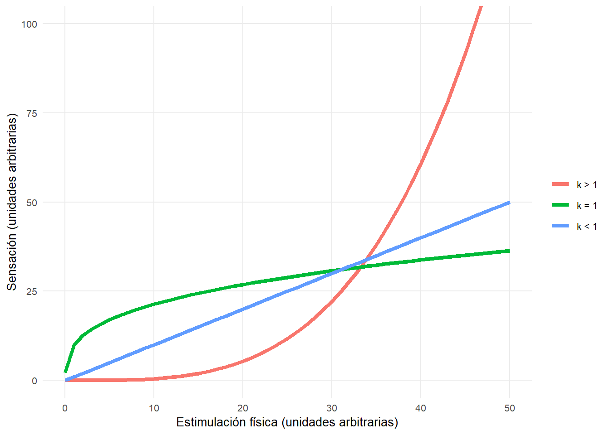
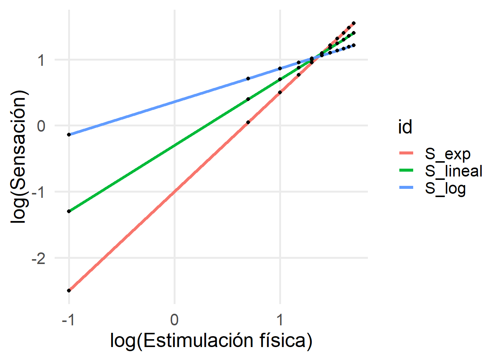
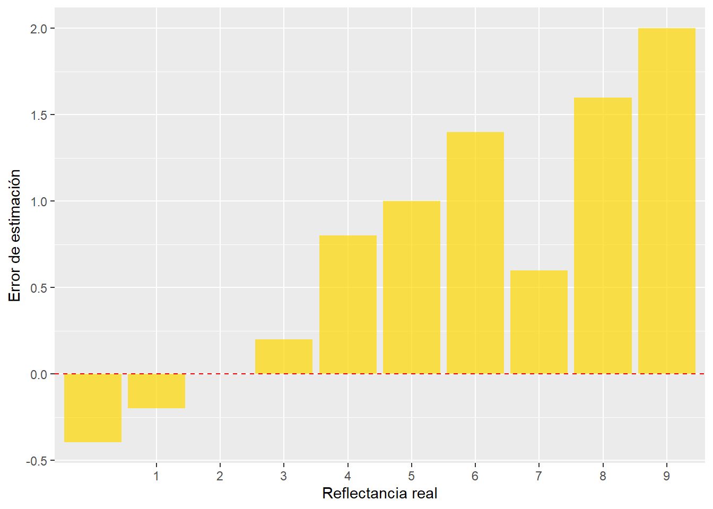
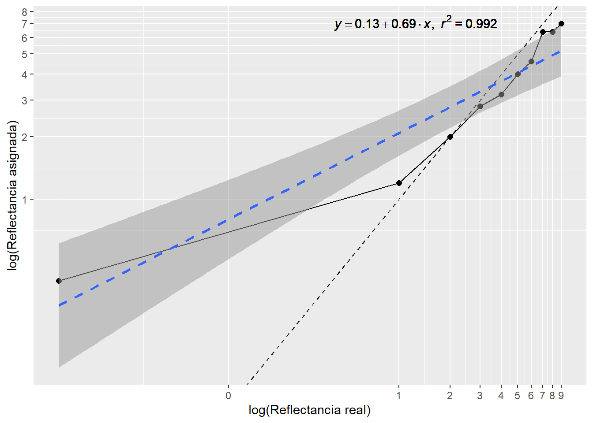
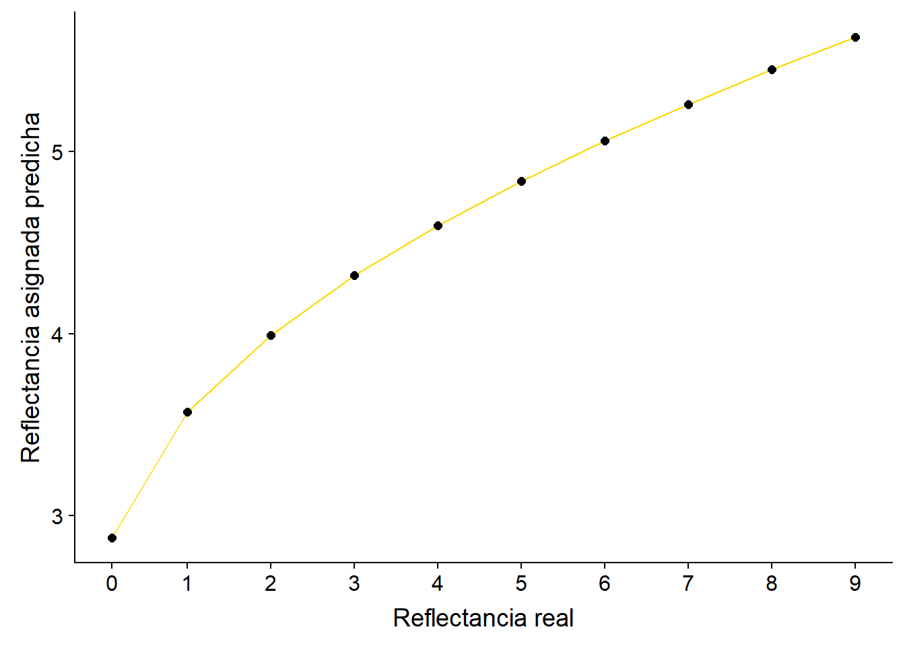

Práctica 3: Estimación de la Claridad (psicofísica de Stevens)
Ley de Weber-Fechner
Una derivación de la ley de Weber posteriormente formulada por Fecher afirmaba que la sensación a un estímulo podía modelarse mediante una relación logarítmica.
\[\begin{equation} \label{Weber_Fechner} \ S = K * log(E) \end{equation}\]Según Fechner había propuesto esta ley psicofísica, daba a entender que la relación entre estimulación y sensación sólo podía ser de tipo logrtítmica. Sin embargo, hay situaciones en las que este tipo de relación no se sigue. Esto es importante porque el hecho de que no todos los tipos de estimualciones tengan una correspondencia psicofísica puede tener un efecto capital en la supervivencia de un organismo. Vamos a poner dos ejemplos clásicos diferentes:
Efecto de la presión sobre la piel: Es el tipo de correspondencia psicofísica que se comporta con una correspondencia exponencial. Si aplicamos sobre la piel una estimulación muy baja, la reacción será muy pequeña y probablemente sólo notaremos cosquillas. Sin embargo, tan pronto como aplicamos un poco más de presión sobre la misma podemos obtener una respuesta de dolor muy alta.
Efecto de iluminación: Es un tipo de correspondencia clásica de tipo logarítmico. En este caso, un nivel de iluminación muy baja en la retina dará una sensación suficiente de iluminación como para poder percibir nuestro entorno sin mayor problema. Sin embargo, una estimulación muy alta no traerá consigo un cambio en la sensación correlativo. En su lugar, se produce una adaptación del sistema a niveles altos de luminancia haciendo que cambios muy grandes en iluminación se perciban como un cambio muy pequeño en brillo.
Reflexionando sobre esto, Stevens se preguntó si podría existir alguna forma de generalizar la relación entre la estimulación y la sensación producida de tal manera que en una misma ecuación se recogieran relaciones lineales, logarítmicas o exponenciales.

Esta generalización de correspondencias psicofísicas pasó a llamarse Ley de Stevens.
\[\begin{equation} \label{Stevens} \ S = c * E^{k} \end{equation}\]En la misma, el exponente k describe cómo sería la relación entre la sensación y la intensidad del estimulo.
k > 1: Incremento expansivo
k = 1: Incremento lineal
k < 1: Incremento compresivo
Por su parte, la c sería una constante que describiría la sensación en ausencia de estimulación. El problema con estas curvas es que son difíciles de analizar. Por eso es importante cómo está formulada la ley de Stevens. Si aplicamos una transofrmación log-log, es decir, aplicamos logaritmos a todo lo que tenemos a la izquierda y a la derecha de la ecuación podemos linearizar las curvas de la ley de Stevens dando la siguiente igualdad:
\[\begin{equation} \label{Log_Log_Stevens} \ log(S) = log(c) * n * log(E) \end{equation}\]Functions %>%
gather(id,value,S_lineal:S_exp) %>%
ggplot(.,aes(log(E,10),log(value,10),group=id, color = id)) +
#geom_abline(linetype = 2) +
geom_line(size = 1.5 ) +
geom_point(color="black") +
#facet_wrap(~id, scales = "free", labeller = as_labeller(names)) +
guides(fill = FALSE) +
# scale_color_discrete(labels = c("(k = n) > 1","(k = n) = 1", "(k = n) < 1"), name = NULL) +
labs(x = "log(Estimulación física)", y = "log(Sensación)") +
theme_minimal(20) +
theme(panel.grid.minor = element_blank())
Para utilizar la ley de Stevens y la ley de Weber-Fechner, realizaremos un pequeño experimento que podréis encontrar en el campus virtual de la asignatura.
Parte práctica: Estimación de la Claridad (psicofísica de Stevens)
Pregunta:
¿Cuál es la exactitud en nuestras estimaciones de claridad? Es decir, ¿cómo es nuestra habilidad para juzgar la reflectancia?
Esto nos indicará qué ajuste tienen los sensores de la reflectancia, es decir, los bastones con las estimulación física.
Hipótesis:
En esta Práctica no pretendemos verificar ninguna hipótesis. No hay hipótesis experimental. Nuestro objetivo se centra en la construcción de una escala de percepción de la claridad, haciendo uso de uno de los métodos directos propuestos por S.S. Stevens.
Metodología
Estímulos: A modo de referencia inicial, se muestran las imágenes de 10 niveles de claridad (0-225) en una imagen.

Instrucciones: El experimento consiste en la presentación de una serie de cuadros de diferente claridad en la zona central de la pantalla, a los que debes asignar un Número comprendido entre 0‑9 (Escala de claridad).

–
Para pensar: ¿Por qué no debemos realizar el experimento utilizando un fondo gris? ¿De qué color debería ser el fondo para realizarlo en las condiciones más óptimas?

Variables
Variables independientes (VI):
- Reflectancia (0, 25, 50, 75, 100, 125, 150, 175, 200, 225)
Variable dependiente (VD), aquella que manipula el observador:
- Valor asignado (Claridad percibida).
En total tendremos 50 ensayos:
\[\begin{equation} \label{trials_p2a} \ 10~reflectancias \times 5~repeticiones = 50~ensayos~(trials) \end{equation}\]Como no somos procesadores de información infalibles y nuestra respuesta tiene cierta variabilidad o error, hemos de realizar cada combinación de condiciones varias veces. En este caso, para que el experimento sea corto hemos introducido únicamente 3 repeticiones. Por lo tanto: 4 matices * 10 luminancias del estímulo cromático * 3 repeticiones dan un total de 120 ensayos o trials.
\[\begin{equation} \label{HK_1} \ Brillo_{Crom} = Brillo_{Acrom} \end{equation}\]- La luminancia del estímulo acromático será mayor que la del estímulo cromático:
##### Leemos los datos de nuestro experimento
Luminancia <- read.table("./pia/P3/Dades_claridad.txt", header = T, skip = 3)
Luminancia <- Luminancia %>%
mutate(Claro = ifelse(Claro == 0, 0.1, Claro),
Asign = ifelse(Asign == 0, 0.1, Asign),
error_est = Claro - Asign,
log_Claro = log(Claro,10),
log_Asign = log(Asign,10)) %>%
select(-Assaig,-Temps) %>%
group_by(Claro) %>%
summarize_all(.funs="mean")
kable(Luminancia %>% select(-log_Claro,-log_Asign))| Claro | Asign | error_est |
|---|---|---|
| 0.1 | 1.0 | -0.9 |
| 1.0 | 2.0 | -1.0 |
| 2.0 | 2.8 | -0.8 |
| 3.0 | 3.2 | -0.2 |
| 4.0 | 3.8 | 0.2 |
| 5.0 | 4.6 | 0.4 |
| 6.0 | 5.0 | 1.0 |
| 7.0 | 6.4 | 0.6 |
| 8.0 | 7.8 | 0.2 |
| 9.0 | 8.6 | 0.4 |
lm_eqn <- function(df){
m <- lm(y ~ x, df);
eq <- substitute(italic(y) == a + b %.% italic(x)*","~~italic(r)^2~"="~r2,
list(a = format(unname(coef(m)[1]), digits = 2),
b = format(unname(coef(m)[2]), digits = 2),
r2 = format(summary(m)$r.squared, digits = 3)))
as.character(as.expression(eq));
}
ggplot(Luminancia, aes(Claro, Asign)) +
geom_abline(linetype = 2) +
geom_point(size = 2) +
geom_line() +
stat_smooth(method = "lm", linetype = 2, size = 1, alpha = 0.5) +
labs(x = "Reflectancia real", y = "Reflectancia asignada") +
scale_x_continuous(labels = as.character(c(0, 25, 50, 75, 100, 125, 150, 175, 200, 225)),
breaks = c(0.1, c(1:9))) +
geom_text(x = 2, y = 7.5, label = lm_eqn(Luminancia %>%
rename(y = Asign,
x = Claro)), parse = TRUE)
ggplot(Luminancia, aes(factor(Claro), error_est)) +
geom_bar(stat="identity", alpha = 0.7, fill = "gold") +
geom_hline(yintercept = 0, linetype = 2, color = "red") +
labs(x = "Reflectancia real", y = "Error de estimación") +
scale_x_discrete(labels = as.character(c(0, 25, 50, 75, 100, 125, 150, 175, 200, 225)),
breaks = c(0.1, c(1:9)))
lm_coef <- coef(lm(data=Luminancia, log_Asign ~ log_Claro))
ggplot(Luminancia, aes(Claro,Asign)) +
geom_abline(linetype = 2) +
geom_point(size = 2) +
geom_line() +
stat_smooth(method = "lm", linetype = 2, size = 1, alpha = 0.5) +
labs(x = "log(Reflectancia real)", y = "log(Reflectancia asignada)") +
scale_x_log10(breaks = c(0.1, c(1:9)), labels = c(0, c(1:9))) +
scale_y_log10(breaks = c(0.1, c(1:9)), labels = c(0, c(1:9))) +
geom_text(x = 0.0001, y = 0.9, label = (lm_log=lm_eqn(Luminancia %>%
rename(y = log_Asign,
x = log_Claro))), parse = TRUE)
¿Cómo se traducen estos exponentes en la fórmula de Stevens?
\(c = 10^{\beta_{0}}\)
\(n\) = \(\beta_{1}\)
En el caso anterior tendramos que:
\(S = 10^{0.37} * E^{0.46}\)
Para repasar:
-¿Cuál es el exponente del estímulo?
-¿Qué tipo de curva de respuesta encajaría mejor con la respuesta a la luminancia en los bastones?
Predicted <- data_frame(
x = c(0.1,c(1:9)),
y = 10^lm_coef[1] + x^lm_coef[2]
)
ggplot(Predicted, aes(x,y)) +
geom_line(color = "gold") +
geom_point(size = 2) +
labs(x = "Reflectancia real", y = "Reflectancia asignada predicha") +
scale_x_continuous(breaks = c(0.1, c(1:9)), labels = c(0, c(1:9))) +
scale_y_continuous(breaks = c(0.1, c(1:9)), labels = c(0, c(1:9))) 
Ejercicios para resolver en clase:
¿Cuál es la forma de la correspondencia psicofísica que describe la ley de Fechner? ¿y la de Stevens?
¿Qué método de estudio utiliza la psicofísica de Stevens?
¿Con qué objetivo aparece la ley de Stevens?
¿Por qué cada tipo de estimulación describe una curva diferente?
¿Qué elemento en la ley de Stevens indica la relación entre estímulo y sensación?
¿Qué diferencia hay entre claridad y reflectancia?
¿Qué fotoreceptores son los principales encargados de su procesamiento?